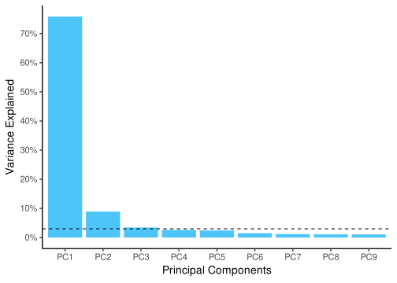

PCA and Heatmap
Workshop on ggplot
Lokesh Mano • 06-Aug-2020
1 PCA
Let us first make a PCA object. For this, we will use the VST data, because it makes sense to use the normalized data for building the PCA. To run PCA, we use the R function prcomp(). It takes in a matrix where samples are rows and variables are columns. Therefore, we transpose our count matrix using the function t(). If we do not transpose, then PCA is run on the genes rather than the samples.
1.1 Variance of components
The next line of code plots the variance explained by the top PCs. Th
comp_var <- function(x) x^2/sum(x^2)
library(scales)
vst_pca$sdev %>%
as_tibble() %>%
comp_var() %>%
mutate(Comp = colnames(vst_pca$x)) %>%
slice(1:9) %>%
ggplot(aes(x=Comp, y = value)) +
geom_bar(stat = "identity", fill = "#4DC5F9") +
geom_hline(yintercept = 0.03, linetype=2) +
xlab("Principal Components") +
scale_y_continuous(name = "Variance Explained", breaks = seq(0,0.8,0.1), labels = percent_format(accuracy = 5L)) +
theme_classic(base_size = 14)plot

1.2 Scatter plot
So, looks like the first two components explain almost 85% of the data. Now, let us look into building the plot out of these components. From the above object, to get the scatter plot for the samples, we need to look into vst_pca$x. Then, we combine this data (as shown below) with the metadata to use different aesthetics and colors on the plot.
output
## PC1 PC2 PC3 PC4 PC5 PC6
## Sample_1 -34.641623 -13.435531 6.486032 -0.2742477 -6.406502 5.6703279
## Sample_2 -35.431333 -13.277983 5.171377 -0.3540945 -3.953216 6.9974341
## Sample_3 -35.938795 -14.544994 2.885351 -11.3414829 5.950082 -10.8497916
## Sample_4 -20.672358 3.962013 -1.414301 10.4819194 -0.195882 -2.8003847
## Sample_5 -21.155503 1.390981 -6.644132 7.4002617 6.505502 0.9771040
## Sample_6 -22.662075 1.115504 -9.801356 6.3107519 7.431833 0.6592987
## Sample_7 1.862762 24.449057 12.865650 -4.4029501 5.822040 4.1873901
## Sample_8 -5.909698 13.992629 -14.775686 -10.9789567 -8.967097 2.2612207
## Sample_9 -3.233544 17.321871 5.196746 2.5142966 -6.983077 -7.2580550
## Sample_10 60.630406 -5.930071 6.993097 5.7393184 -4.254238 -2.6905179
## Sample_11 56.669696 -10.638879 -5.860598 0.4646609 -5.216763 -1.3748865
## Sample_12 60.482067 -4.404596 -1.102179 -5.5594769 10.267317 4.2208603
## PC7 PC8 PC9 PC10 PC11 PC12
## Sample_1 -7.6896364 7.5508580 -1.1936551 -0.2382806 -0.7901002 6.374529e-14
## Sample_2 5.8962070 -9.0662471 -1.0449651 0.2284545 1.3982703 4.489535e-14
## Sample_3 1.4353811 0.7461021 1.4769949 0.2114041 -0.5247079 6.296152e-14
## Sample_4 1.2992058 2.3863551 6.1089574 -0.1510797 9.1851796 6.559618e-14
## Sample_5 -2.7487548 -2.7353990 4.5686381 -6.6024251 -6.9911571 2.914207e-14
## Sample_6 2.1391551 2.3567136 -7.7925047 6.9400619 -1.3499685 5.051235e-14
## Sample_7 5.2166866 4.0805978 0.2292610 -1.4574679 -1.2200771 3.675884e-14
## Sample_8 -0.1684735 -0.1448735 3.9822133 2.5610601 -0.5182664 3.653141e-14
## Sample_9 -5.4663572 -5.2056738 -6.4295279 -1.6062665 0.5133496 7.142697e-14
## Sample_10 0.8277618 -0.5767198 4.9156730 6.8596253 -4.8748004 5.502887e-14
## Sample_11 5.8886122 3.9566331 -4.4374522 -6.9835771 0.4457707 2.885463e-14
## Sample_12 -6.6297877 -3.3483466 -0.3836326 0.2384911 4.7265074 -3.373501e-14And, if you check the class() of this object, you will realize that this is a matrix. To be able to comfortably use tidyverse on this object, we must first convert this to a data.frame.
vst_pca_all <- vst_pca$x %>%
as.data.frame() %>%
rownames_to_column(var = "Sample_ID") %>%
full_join(md, by = "Sample_ID")
# Just to keep the order the right way.
vst_pca_all$Sample_Name <- factor(vst_pca_all$Sample_Name, levels = c("t0_A","t0_B","t0_C","t2_A","t2_B","t2_C","t6_A","t6_B","t6_C","t24_A","t24_B","t24_C"))
vst_pca_all$Time <- factor(vst_pca_all$Time, levels = c("t0","t2","t6","t24"))
vst_pca_all$Replicate <- factor(vst_pca_all$Replicate, levels = c("A","B","C"))
ggplot(vst_pca_all, aes(x=PC1, y=PC2, color = Time)) +
geom_point(size = 3, aes(shape = Replicate)) +
geom_vline(xintercept = 0, linetype=2) +
geom_hline(yintercept = 0, linetype=2) +
theme_bw() +
theme(panel.grid.major = element_blank(),
panel.grid.minor = element_blank()) plot
2 Heatmap
For heatmap, let us look into pheatmap library which is not part of ggplot, but it is a well known package for building heatmaps. It contains a lot of internal aesthetics that you can add that are very informative and intuitive. Let us first start with making a correlation matrix and plot it.

3 Session info
## R version 3.6.3 (2020-02-29)
## Platform: x86_64-pc-linux-gnu (64-bit)
## Running under: Ubuntu 20.04.1 LTS
##
## Matrix products: default
## BLAS: /usr/lib/x86_64-linux-gnu/blas/libblas.so.3.9.0
## LAPACK: /usr/lib/x86_64-linux-gnu/lapack/liblapack.so.3.9.0
##
## locale:
## [1] LC_CTYPE=en_US.UTF-8 LC_NUMERIC=C
## [3] LC_TIME=en_US.UTF-8 LC_COLLATE=en_US.UTF-8
## [5] LC_MONETARY=en_US.UTF-8 LC_MESSAGES=en_US.UTF-8
## [7] LC_PAPER=en_US.UTF-8 LC_NAME=C
## [9] LC_ADDRESS=C LC_TELEPHONE=C
## [11] LC_MEASUREMENT=en_US.UTF-8 LC_IDENTIFICATION=C
##
## attached base packages:
## [1] stats graphics grDevices utils datasets methods base
##
## other attached packages:
## [1] pheatmap_1.0.12 scales_1.1.1 forcats_0.4.0 stringr_1.4.0
## [5] purrr_0.3.4 readr_1.3.1 tidyr_1.0.2 tibble_3.0.1
## [9] tidyverse_1.3.0 reshape2_1.4.4 ggplot2_3.3.0 dplyr_0.8.5
## [13] captioner_2.2.3 bookdown_0.17 knitr_1.28
##
## loaded via a namespace (and not attached):
## [1] tidyselect_1.1.0 xfun_0.13 haven_2.2.0 lattice_0.20-40
## [5] colorspace_1.4-1 vctrs_0.3.0 generics_0.0.2 htmltools_0.4.0
## [9] yaml_2.2.1 rlang_0.4.6 pillar_1.4.4 glue_1.4.0
## [13] withr_2.2.0 DBI_1.1.0 RColorBrewer_1.1-2 dbplyr_1.4.2
## [17] modelr_0.1.8 readxl_1.3.1 lifecycle_0.2.0 plyr_1.8.6
## [21] munsell_0.5.0 gtable_0.3.0 cellranger_1.1.0 rvest_0.3.5
## [25] evaluate_0.14 labeling_0.3 fansi_0.4.1 broom_0.5.4
## [29] Rcpp_1.0.4.6 backports_1.1.7 jsonlite_1.6.1 farver_2.0.3
## [33] fs_1.3.1 hms_0.5.3 digest_0.6.25 stringi_1.4.6
## [37] grid_3.6.3 cli_2.0.2 tools_3.6.3 magrittr_1.5
## [41] crayon_1.3.4 pkgconfig_2.0.3 ellipsis_0.3.0 xml2_1.2.2
## [45] reprex_0.3.0 lubridate_1.7.4 assertthat_0.2.1 rmarkdown_2.1
## [49] httr_1.4.1 rstudioapi_0.11 R6_2.4.1 nlme_3.1-144
## [53] compiler_3.6.3End of document